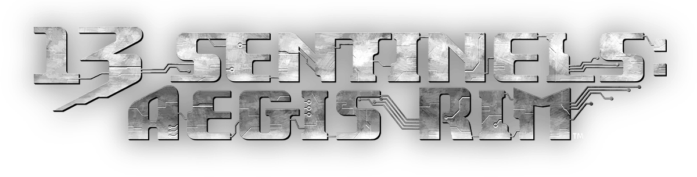
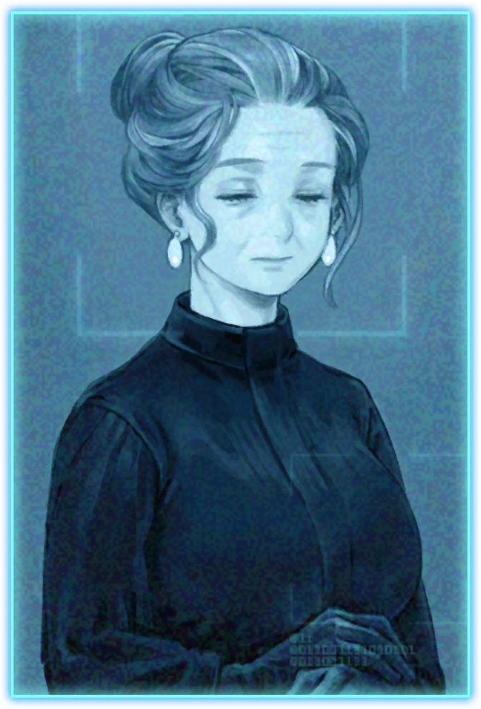
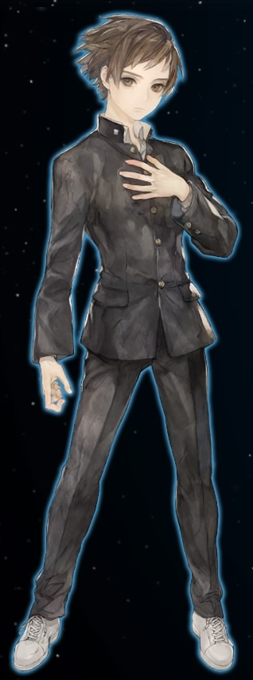
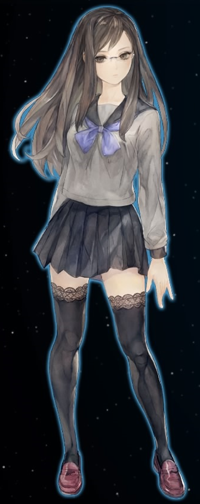
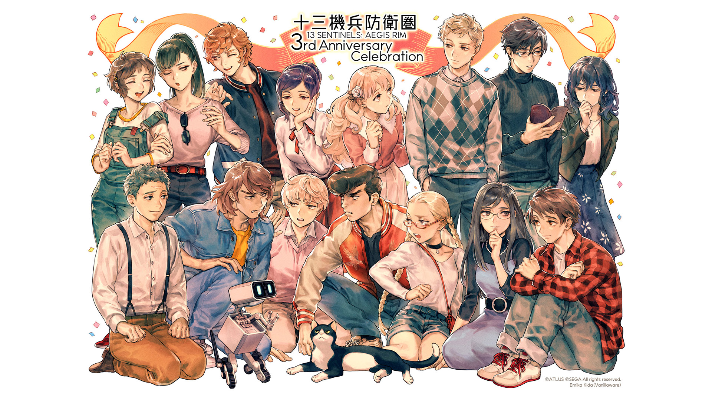
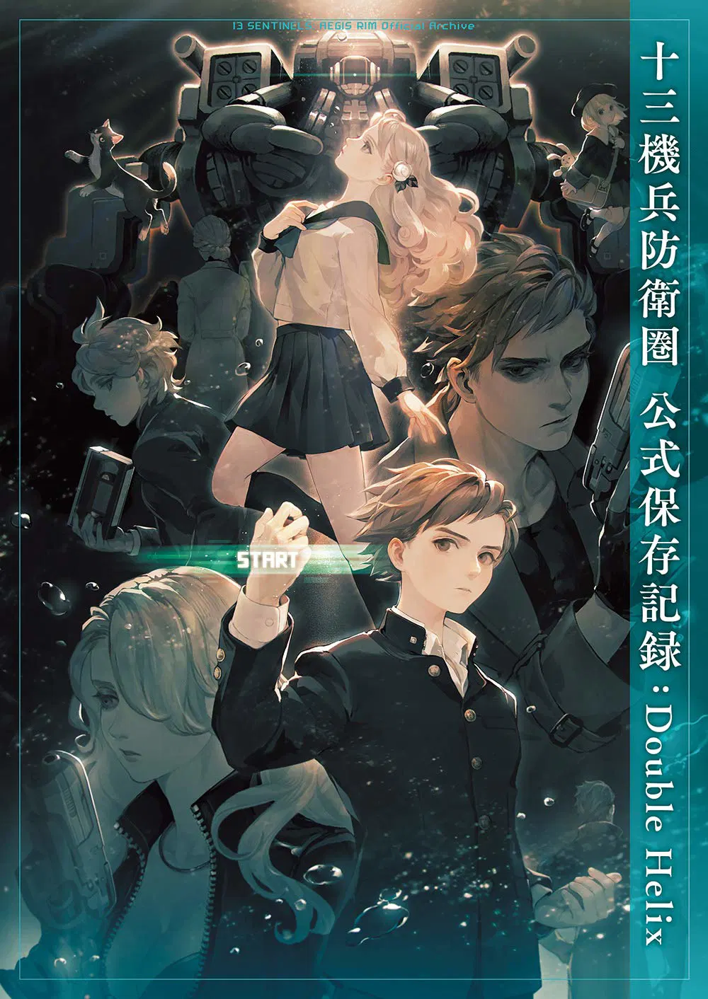
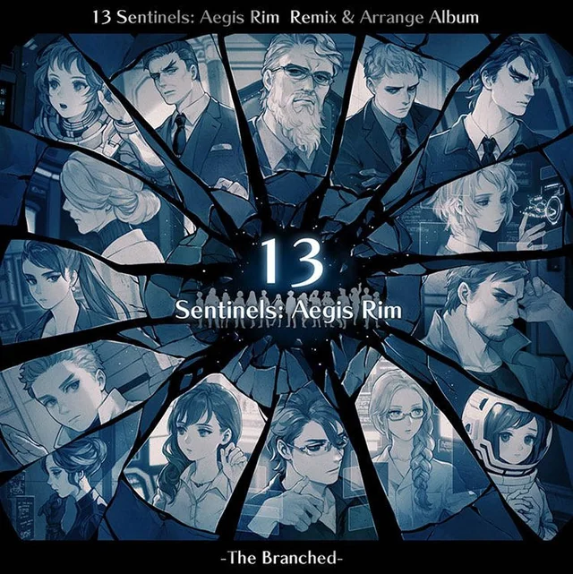
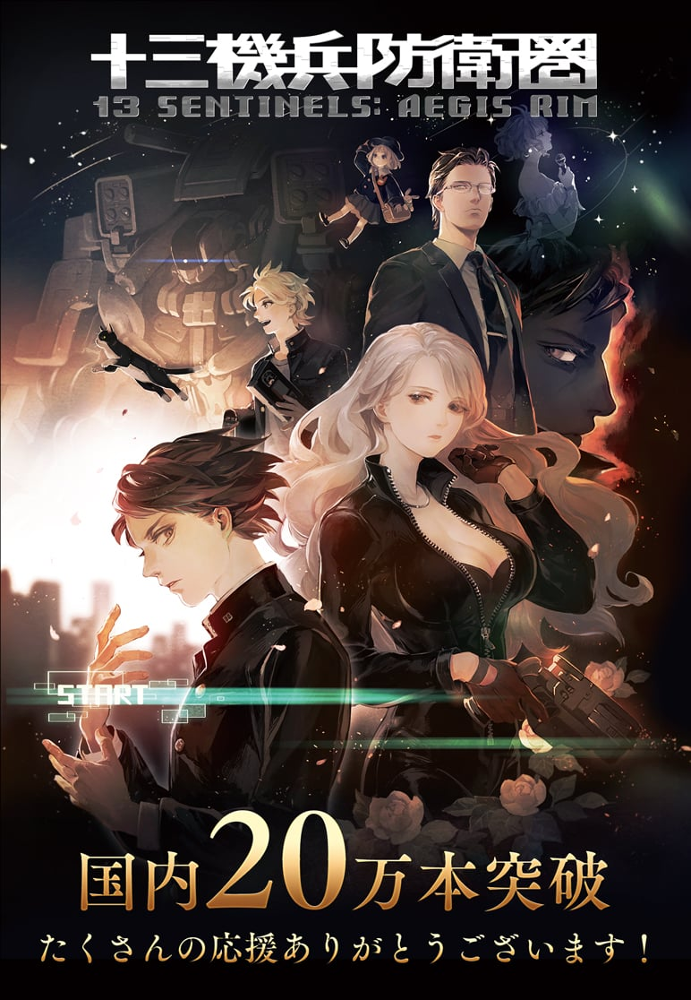
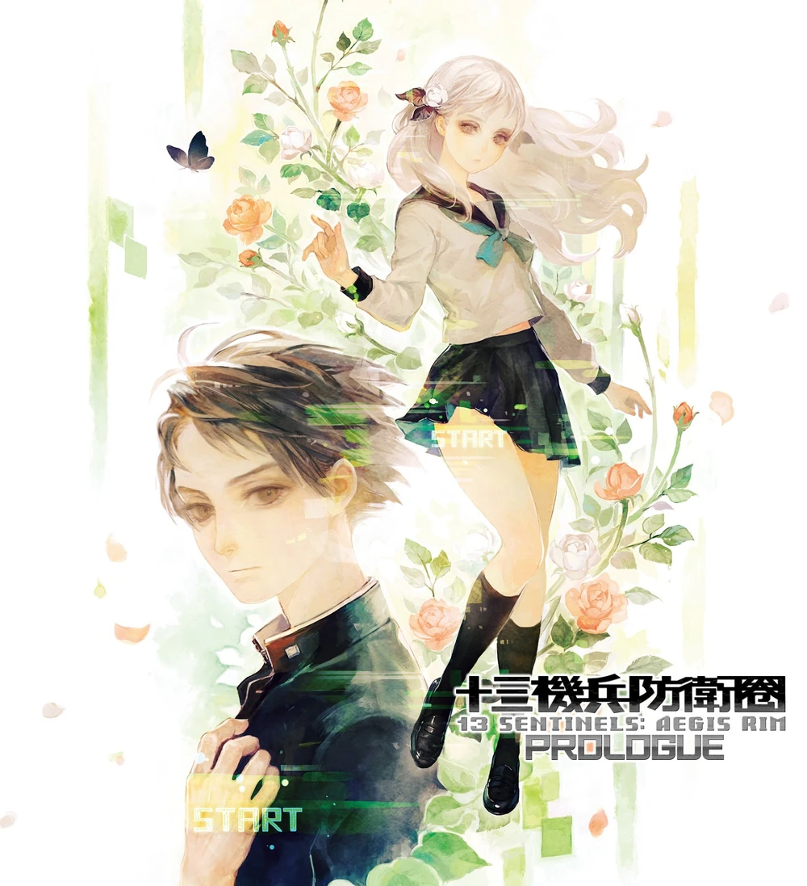
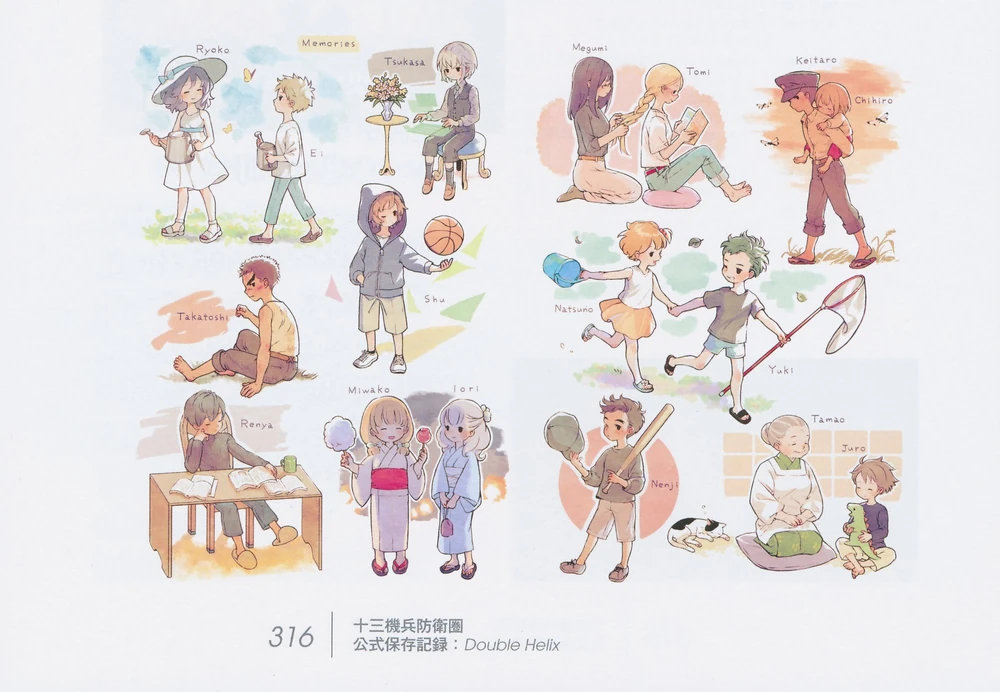

Unfortunately, this article is still a work in progress. Please give us time.

"Please, keep weaving the tapestry, keep the history of humanity alive."
- Tsukasa Okino, Terminal Interface13 Sentinels: Aegis Rim is an adventure sci-fi mystery game spanning thirteen intertwining stories developed by Vanillaware and published by Atlus for the PlayStation 4, with a Nintendo Switch release scheduled for April 2022.
Synopsis
13 Sentinels tells the story of 13 Japanese teenagers who each pilot a giant mech known as the Sentinels to save their city from giant monsters known as Kaiju, which seek to destroy it. The story pogression splits into two modes, Destruction and Remembrance.
Character
 |
Juro KurabeJuro Kurabe (鞍部 十郎 Kurabe Jūrō) is a protagonist in 13 Sentinels: Aegis Rim. He is the pilot of Sentinel No. 13. |
 |
Megumi YakushijiMegumi Yakushiji (薬師寺 恵 Yakushiji Megumi) is a protagonist in 13 Sentinels: Aegis Rim, and the pilot of Sentinel No. 23. |
Gameplay
The game is divided between side-scrolling adventure segments and real-time strategy. This features a unique blend of Remembrance mode (dialogue/choice exploration), Destruction mode (real-time strategy battles against kaijus), and Analysis mode (a glossary of events and characters, not in order of events but the order that it was found in game), all while following 13 characters across different time periods.
Gallery






Trivia
- Yoko Taro, game director and scenario writer for Nier and Nier Automata, has both reccomended the game and Vanillaware to players in Japan, even stating that Vanillaware is a needed company.
Reference
- 13 Sentinels Wiki
- Vanillaware Official Site
- Playstation Trailer(EN)
- Yoko Taro Discusses 13 Sentinels: Aegis Rim(eng subtitle)
- 13 Sentinels: Aegis Rim Official Preservation Record Double Helix
- 13 Sentinels: Aegis Rim Double Helix Developers Talk 1
- 13 Sentinels: Aegis Rim Double Helix Developers Talk 2
- 13 Sentinels: Aegis Rim Double Helix Developers Talk 3
- 13 Sentinels: Aegis Rim Spoiler Q&A With George Kamitani
- The BRILLIANCE of 13 Sentinels: Aegis Rim
- THE REFERENCES OF 13 SENTINELS AEGIS RIM
- Everything You Need To Know About 13 Sentinels Aegis Rim
- The Movies, Manga and Anime that Inspired 13 Sentinels: Aegis Rim